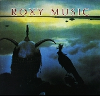
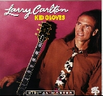
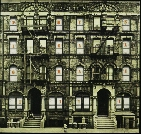
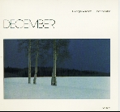
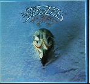
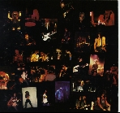
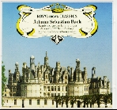
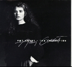
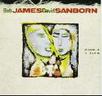
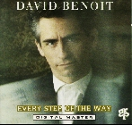

A while back, Tower Records came up with something called Desert Island Discs (or DID's for short) for their PULSE magazine. Pretty much, the idea was, if you were going to be stranded on a desert island with only 10 CD's, which 10 would they be. These would be the only musical stimulii you would have for the rest of your life.... so they better not only be good but well thought out.... 'cuz forever is a long long time!
So I've made my own DID's along the way, and it's amazing how little of it has changed all these years. That's when you know you've got some real timeless gems. My taste varies quite a bit depending on my mood, from Guns to Gershwin, Hendrix to Holiday, and Morrison to Mozart. It was extremely hard coming up with the following list since I had to make sure each genre of my collection was represented. If I'm on a Jazz fix at a given period, I didn't want my whole DID to be nothing but. So with that much said, here's my current list not in any particular order:

Ahhh... all I can say about this one is EXQUISITE! This particular album has been nothing but timeless to me... and for a lot of people that I know too. I remember reading about this album repeatedly in other people's DID's when I was in High School. It along with Pink Floyd's "Dark Side..." were 2 of the most consistently mentioned albums in each issue of PULSE. So when I was in Tokyo, Japan in 1986, I searched relentlessly for this in digital. I finally found a West Germany Import of "Avalon" in of all places, Taiwan, and it's been on my list since then. Since then, I've replaced it with a sonically superior Nimbus-master version from U.K. By the way, the domestic version of "Avalon" pales in comparison to the U.K. sonically.To this day, I have not heard a better crafted album both sonically and conceptually. Two of the most famous cuts on this CD are "More Than This" and "Avalon" which have crossed over to stations like KKSF (Contemporary Jazz) as well as Alternative (San Diego's 91X). But it's the rest of "Avalon" that instils continuity and flow, by creating a soundscape of textures and colors. Recorded in "warm" analog, Bryan Ferry and company used the stereo spectrum to its full potential, with exotic sounds and nuances in such songs as "The Main Thing" and "The Space Between Us." My personal favorite is the sleeper "True To Life."

Larry Carlton started his claim to fame by injecting his "tasty licks" into such Steely Dan classics as "Deacon Blues" and "Josie." He's since gone on with a very successful solo career in Jazz with remake hits like Santo Farino's "Sleepwalk" and Doobie's "Minute By Minute.""Kid Gloves" was released in 1992 and refreshingly contains both of his unique styles of acoustic and electric guitar playing for the first time. Conceptually, it's based on blues but contains some fine Carlton-Jazz styles. I dig it because there's not a bad song on this CD. There's some kick-ass rock 'n roll in "Oui Oui Si" as well as sparse clubsy blues in "Terry T." Also worthy of note, "Michelle's Whistle," named after his wife's horse, contains some of the most "fluid" and "creamy" acoustic guitar playing I've heard. If CD's wear out, I probably would be on my 3rd copy of "Kid Gloves."

Led Zeppelin, the "Monster Metal Band that started it all..." as the press would call them is all but trivializing. Zep had much more substance and breadth than the wild rock 'n roll/metal label that was given to their more heavy side.The reason I picked this double Zep album to be on my DID list is because I get 2 albums for 1 DID entry. That means I'm actually sneaking 11 not 10 CD's onto my island (hee hee). Actually, if I could, I would've listed the Led Zeppelin Box-Set (all 10 studio albums) but that just wouldn't be fair would it?
"Physical Graffiti" has such classics as "Kashmir" and "Trampled Underfoot" ... but it's the other lesser-known cuts like "Down By The Seaside" and "In The Light" that really showcase Zep's versatility. I dig it because I grew up with this stuff and I still find freshness in it everytime I hit the play button. Songs like "Boogie With Stu" still cracks me up, and "In My Time Of Dying" still haunts me when I hear just how great "Bonzo" (Zep's late drummer) really was.
To this day, I'm amazed that I still haven't grown tired of listening to Zep after all these years. I'm stoked because I'm going to the San Jose Page-Plant show on May 20.

To counteract the boisterous Zeppelin and Guns, ya gotta have George Winston's "December" in case you happen to bump into a fine mermaid on the island. Another timeless album, "December" is "only" a piano solo album that is most often heard on Christmas radio playlists. I remember a friend at my college dorm in UCLA recommending this album to me. I sez to myself, "Gee... how good could a piano solo album be?" I remember eagerly rushing out to buy this CD and being kinda disappointed when I took it for a spin. I thought it was too mellow.Since then, "December" has really grown on me and I've turned my other friends to this gem. It's seasonal yes... but timeless. I was so moved by Winston's rendition of Pachelbel's "Kanon" and Bach's "Jesu Joy..." that I picked up piano. Well.. piano tinkering that is.
I still picture sipping hot chocolate next to a warm fire inside a log-cabin while it's snowing outside everytime I play this CD. Now if I could only afford a log-cabin.

Yes... it's Frey, Henley, and the boyz. Talk about old farts playing "California Classic Rock".. it's the Eagles. I must admit, I digged their recent overpriced reunion tour despite some press bad rappin'. Some good live material did come out of the whole shindig nevertheless."Their Greatest Hits" has lots of gems from the 70's like "Desparado," "Tequila Sunrise," and "Lyin' Eyes." These boyz could harmonize and tell a story like no one else could. The great thing about them is they're country without the hick. They told many great stories through their tunes and it was all just very good still. This album captures The Eagles in their mellow drug dayz before "Hotel California." To me, this CD is indispensible whenever I take long drives across California. With every listen, I discover just how complex and interesting their trademark harmonies are. It's hard not to sing along with this one.

Yikes! It's Axl and gang rippin' through the airwaves, scaring the indigenous aborigines out of their caves with their blistering Les Pauls and Marshall stacks. AHHHHHHH!!!!This is a most excellent album I'm afraid I'd have to say. Not since Led Zep has a "hard rock" group stormed onto the scene and brought such a breath of fresh air to the industry. "Appetite" was recorded in hard-rock LA during their "pre-November Rain" dayz and captured the "Gunners" at their most destructive and FOOBAR state. In the midst of their drug-abuse and fast-living, they effectively captured the mystique of the whole Sunset Boulevard scene with some incredible Les Paul playing by Slash. The great thing about "Appetite" is its feel. It was tight but loose. Unfortunately, radio stationed killed songs like "Welcome To The Jungle" and "Sweet Child O' Mine," but again, it's the rest of the album that really kicks you in the groin and opens up the steam valve.
I crank this one whenever I'm driving or when I just gotta let it all out. It's a mixture of angst, adrenaline, and release. Unfortunately, I don't care for the message and lyrics conveyed on this album, but it's hard to resist the tasty riffs and hooks littered all over this CD.
It's too bad that Axl and gang have gone on a downward spiral trip since "Appetite" with "Use Your Illusion I and II" and that Spaghetti $#%@!!! album that I don't care for. I think the problem is Axl and Slash have since digressed and disagreed in their musical direction. Slash reportedly wanted to stay on the harder side while Axl swayed towards the more melo-dramatic "November Rain" crap. Don't get me wrong, I think there are some fine songs on "Use Your Illusion" but the feel is gone. The replacement drummer was too precise in his time and synthesizer was introduced in a bad way. The rawness was replaced by sheen and production gloss. I betcha their equipment went from a few wah-wahs and Marshalls to a whole rackful of digital garbage after the success of "Appetite"! Even Slash's tube sound got cleaner on later Guns albums. What happened to the overdriven molten tubes of "Appetite"? Maybe Slash's Snakepit is the answer.

Gotta have some strings and brass to keep the mind challenged when the sun gets extra hot on the island. I'm a pretty newbie classical listener but I sure love it when the strings are just going nuts on Brandenburg. I think no.6 is especially good but then again, it's so hard to keep track of movements as opposed to songs. All I know is, nothing beats some good classical music when I'm driving through Marin County and Monterey... or wherever scenic.

Again, what has money and commercialism done to good artists of integrity? (Ouch! Am I being too harsh here?) This album is a compilation of Amy Grant's earlier Christian Music works before she started singing about "Baby Baby..." and "Love this and Love that..." "Collection" contains some great song writing and great spiritual messages that soothe the soul. Teamed with her husband, Gary Chapman, and long-time partner, the nasal-voice Michael W. Smith, "Collection" covers many musical territories and reveals how contemporary christian music doesn't have to be drabby and boring.I especially like the slower tunes like "Everywhere I Go," the offbeat "Where Do You Hide Your Heart," and the intimate "All I Ever Have To Be." This CD gets better with time. It's just too bad that her talent and musical backdrop has since been replaced by repetitive MIDI loops and predictable formula songwriting.

One of the better collaborations in recent jazz, "Double Vision" showcases 2 of the most prolific musicians today in contemporary jazz... David Sanborn on sax, and Bob James on keyboards. Produced by the legendary Tony LiPuma, "Double Vision" is low-key and sparse in its production leaving much space for both artists to noodle and embellish. Sanborn can still wail like no one can with his trademark screechin' in the higher registers. Bob James' laid back keyboards and Fender Rhoads offer the perfect counterbalance to Sanborn's rawness.I dig this one because it was one of the first jazz CD's I purchased. I bought it because a CD magazine I was reading at the time (1986) said it had good sound quality. Boy has it been a gem ever since. This one reminds me of those grueling UCLA freshman dayz when I would return exhausted from a hard day's work at the greasy dorm cafeteria and had nothing else to lift me up. I'd put on "Double Vision" and just sat back and melt on my beanbag. Now whenever I hear certain cuts from this CD, I would think of rotten vegetables and uneaten portions of starch heavy foods... in a bittersweet way that is.

Voted "Luxman's Best Jazz CD of 1986," "Every Step Of The Way" showcases David Benoit on his Kawai Grand Piano mixing it up with an all-star cast of his contemporaries. The result are some great tunes.Teamed with The Rippington's Russ Freeman, the title cut paves the way with catchy songwriting and great rhythm. The feel of this album is what really makes it special. It kinda takes you all over the world with tunes about Japan in "Shibuya Station" to the Latin-influenced, "Sao Paulo." I personally like the feel good songs like "Key To You," featuring Dave Pack on vocals, and "No Worries," with Nathan East (on slap bass and background vocals) who has gone on to play with Eric Clapton and Fourplay. Bassist-extraordinare Stanley Clarke also makes a cameo appearance on a remake of Michael Jackson's "Just Can't Stop Loving You." (an interesting choice for a cover I must say)
Whenever I just want to relax and soothe, this is the one I reach for. Think of it as an aural massage.
Phew... there you have it. My DID's for now (5/95). Who knows, in a year, everything could be replaced by grunge and other generation X bands.
nahhh!
The following is a list of Honorable Mentions... in case I find a magic lantern on the island and the Genie sez I could add a few more CD's to my list. Here goes:
Just for fun, here is a list of DID's from some famous people...